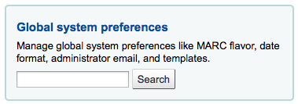
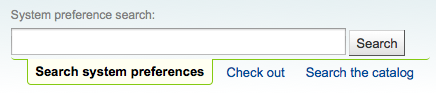
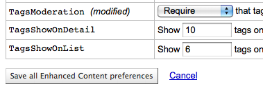
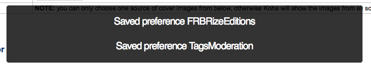
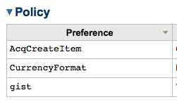

系统配置
系统配置用来控制 Koha 系统，开始使用 Koha 系统之前要对这些配置进行设置。
- 在这里： 更多 > 管理 > 系统配置

系统配置可以通过管理页面检索框或每个系统配置页面顶部的检索框来检索（支持配置项名字或者描述的任意词检索）。

当编辑配置参数时候，旁边会显示 ^(修改)^ 标记直到您点击“保存所有”按钮保存设置之后：

保存所有配置设置后，会出现一个确认信息来通知您修改了哪些设置：

每部分设置项都可以通过点击标题栏“参数”右侧的三角来按照字母顺序排序

如果参数涉及货币值（如 maxoutstanding），则显示的货币将是您在 货币和汇率 管理区域中设置的默认货币。在下面的示例中，它们都将读取 USD 为美元。
重要
系统为每个图书馆都配置了唯一 URL ，这些值可以通过编辑 koha-http.conf 文件来覆盖系统设置，这些操作必须由系统管理员或有权访问系统文件的人员完成。例如，如果在所有图书馆中，除了一个图书馆外都需要在检索结果中突出显示检索词，您需要将 OpacHighlightedWords 选项设置为 “Highlight”，然后通过添加’SetEnv VERRIDESYSPREFOpacHighlightedWords “0”’到文件koha-http.conf来关闭此功能。然后重新启动 Web 服务器后，该图书馆将不再看到突出显示的术语。更多有关详细信息，请咨询您的系统管理员。